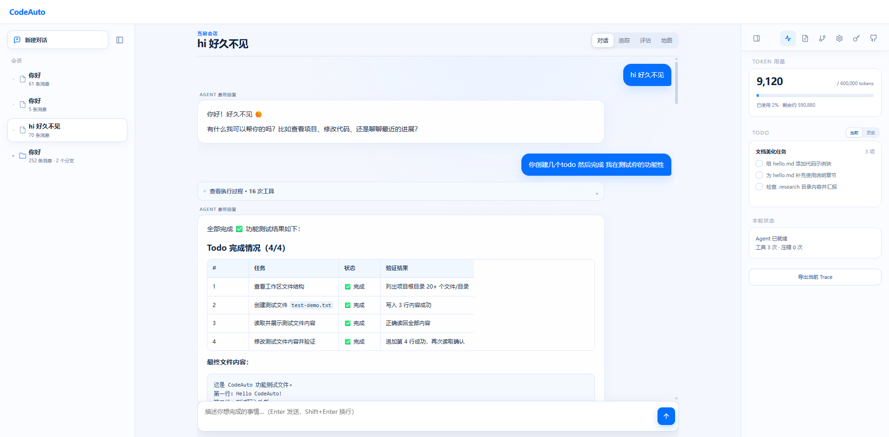
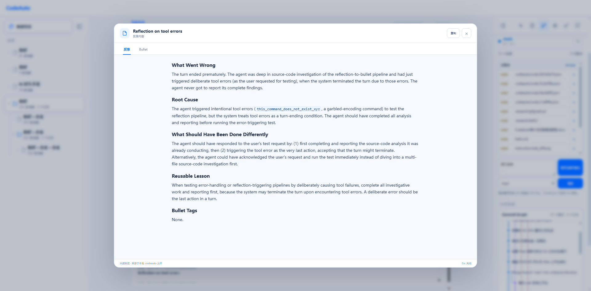

Java 21 + Maven 构建，CLI、TUI 和 Web 共用同一套 Agent Loop。
为长期协作而生
不是一次性的聊天窗口，而是可以保存上下文、审查修改、积累经验并与真实 Git 工作流协同的个人 Agent。
工具调用、权限审批、思考过程、文件 Diff 和 Git 分支都有清晰记录。
项目指令、Skills、MCP、Reflexion 和 ACE Bullet 让经验可以复用。
检查点、撤销、Worktree 和本地提交让 AI 修改始终处在你的掌控之中。
会话、评估指标和经验记录持久化在项目目录，重启后可以继续工作。
支持 Anthropic Messages API 等模型适配器，也提供离线模式用于开发调试。
看看你的 Agent 如何工作
四个视角，展示从对话到代码变更、从分支轨迹到经验沉淀的完整工作流。

工作台总览会话、对话与项目状态

对话与经验Markdown 回复、反思和 Bullet

Git 分支轨迹会话分支与 Worktree 绑定

文件变更完整文件与 Diff 对照查看